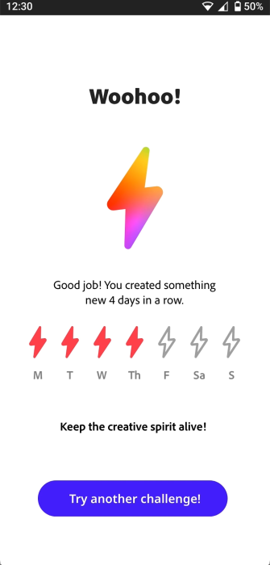
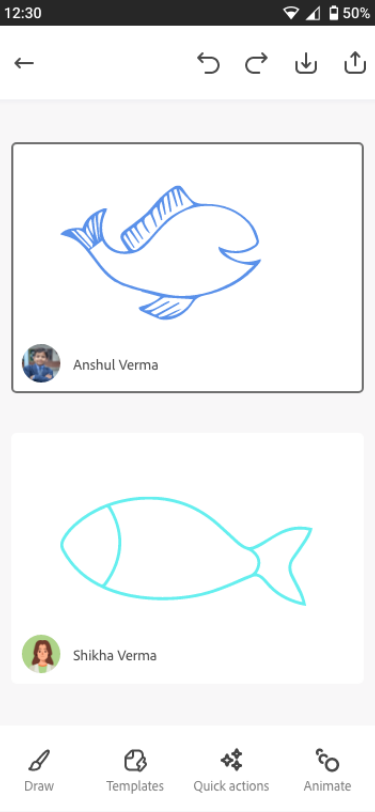

Adobe Inspire
Daily creative challenges for Indian students. My internship project at Adobe. Shipped a prototype focused on making drawing a habit, not a skill.

Daily creative challenges for Indian students. My internship project at Adobe. Shipped a prototype focused on making drawing a habit, not a skill.
Indian parents discourage "non-STEM" activities. Blank canvases are intimidating. Daily prompts featuring folk art like Madhubani make it easier to start.
Kids new to digital art freeze on empty screens. We used Express templates and quick actions like pattern-making to get them creating in seconds.
Streaks work. Daily creation builds the habit. Parents can see consistency. That matters when they're skeptical about art.
Friends and family can draw on the same challenge. Makes creativity social instead of solitary. Grandparents joined in testing.
New challenge each day. Today: draw a Madhubani-style fish. See what others made. Get a quick tutorial if you need it.
A simplified Fresco mobile toolbar makes drawing fun. Kids can draw on paper and capture with Adobe Capture, or draw digitally and bring artwork to life with animation templates.

Draw every day, keep your streak. Miss a day, start over. Simple motivation that works.

Invite friends or grandparents. Same challenge, different screens. Compare when you're done.
The platform that inspired Inspire's template-based approach.
Another Adobe project focused on creativity for kids.